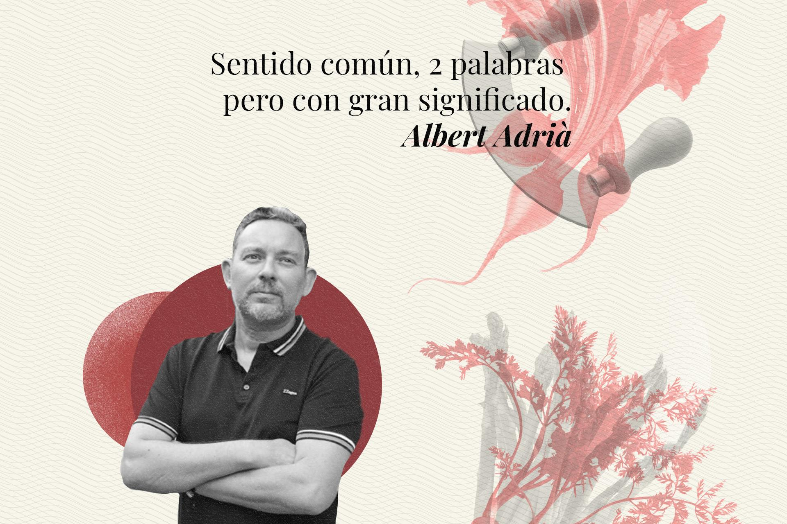
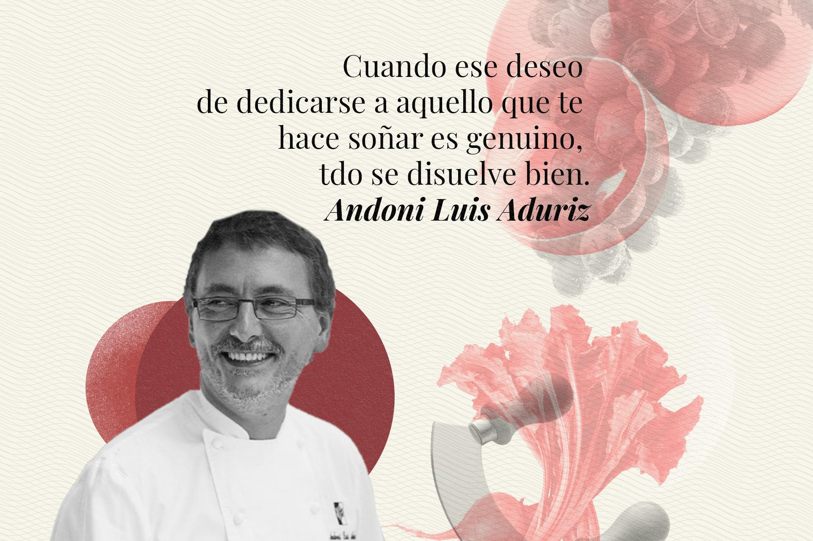
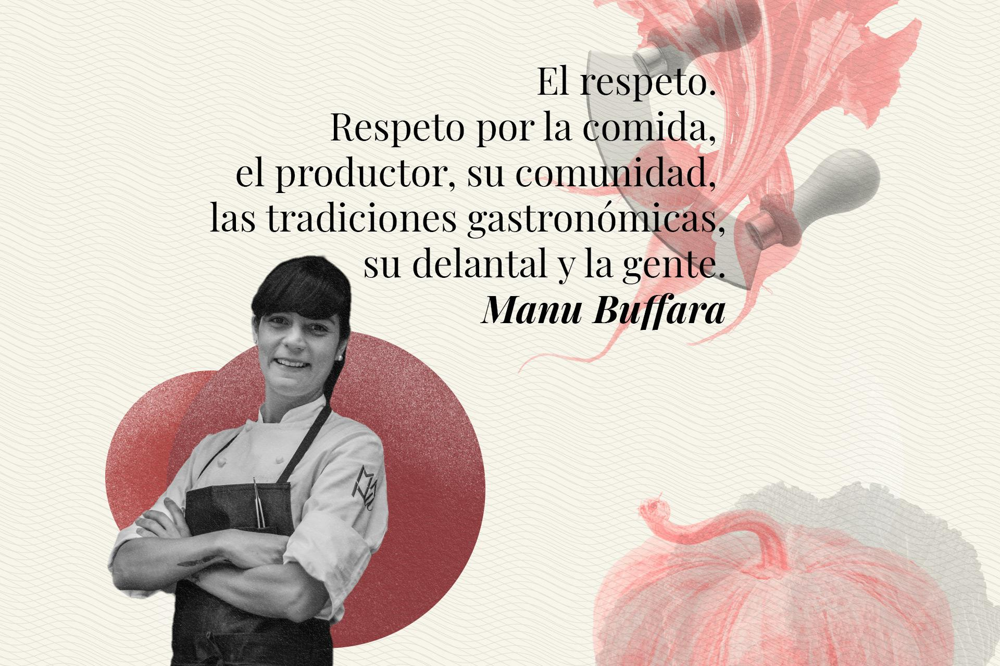
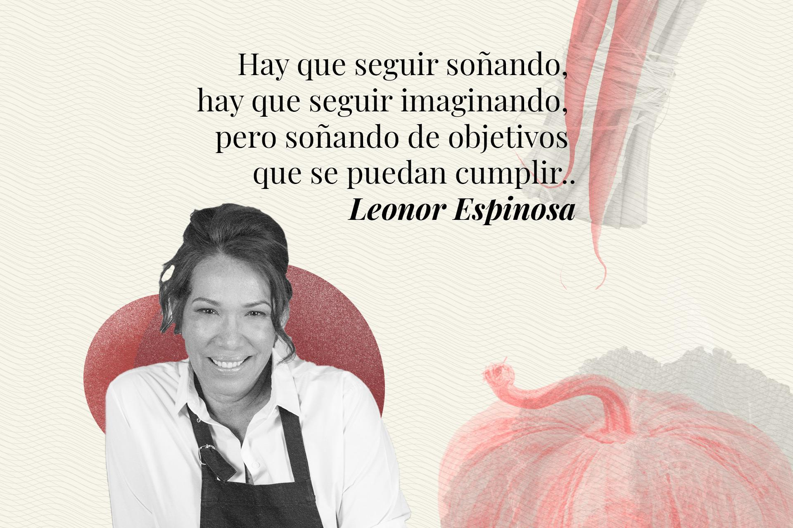
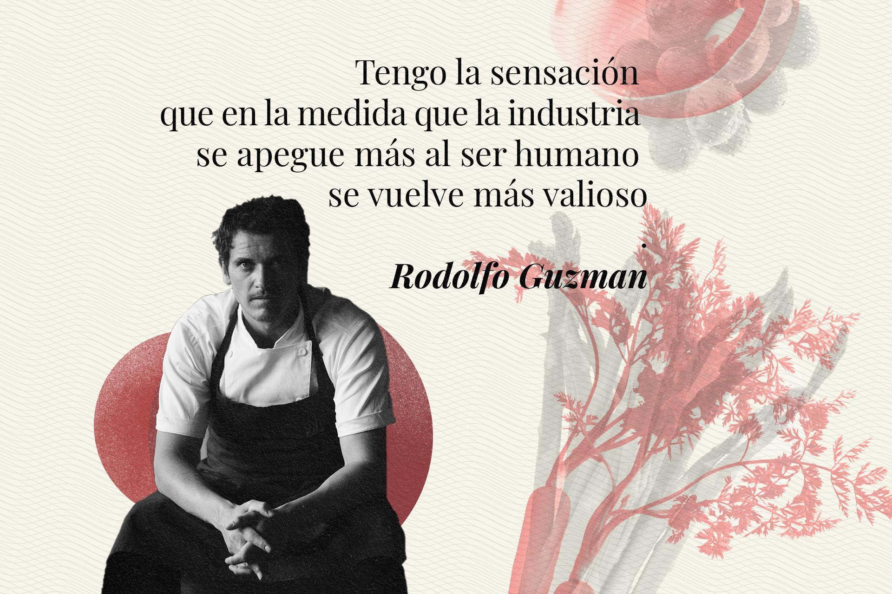
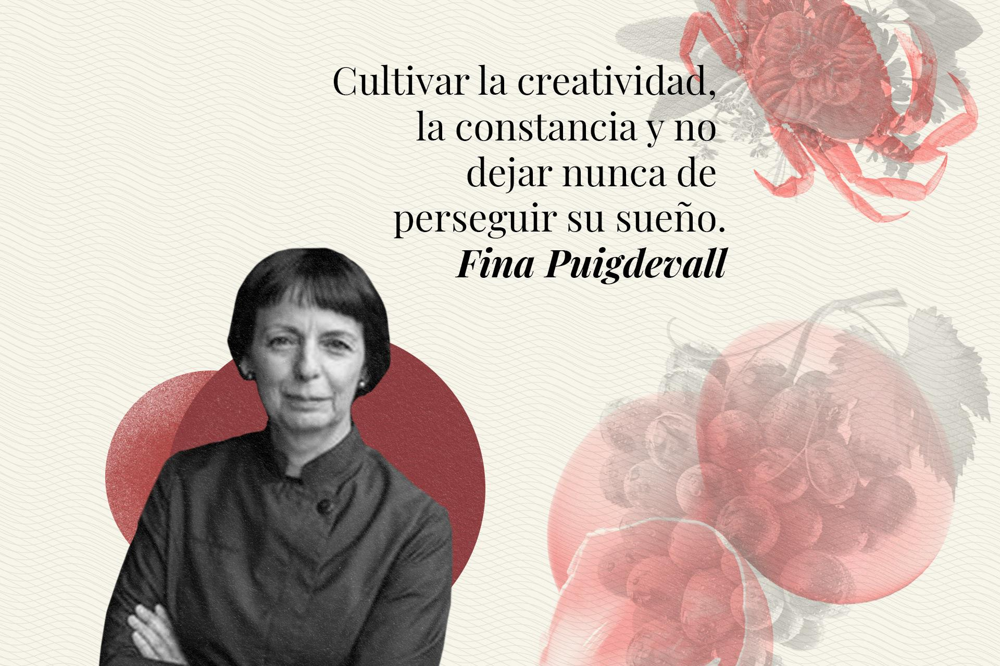

¿Que opinan estos Chef?
Albert Adrià - Tickets (España)Andoni Luis Aduriz - Mugaritz (España)
Manu Buffara - Manu (Brasil)
Leonor Espinosa - Leo (Colombia)
Rodolfo Guzmán - Boragó (Chile)
Fina Puigdevall - Les Cols (España)
¿Cuál será el futuro de la gastronomía? Las reflexiones de seis chefs famosos
Albert Adrià - Tickets (España)
1. Incertidumbre. De hecho creo que, como el resto del mundo, hemos vuelto a pensar en cuándo volverá la normalidad y casi un año después estamos aún peor. Por lo tanto, el cierre de decenas de miles de restaurantes va a ser una realidad que los profesionales tendrán que afrontar, pero estamos en un sector que sabe bien lo que significa sufrir y seguir adelante.
2. Soy optimista y creo que habrá muchas oportunidades, tal y como indican muchas encuestas y estadísticas. Tardaremos un poco porque las clases medias se han empobrecido, pero también hay mucha gente que se ha dado cuenta con esta situación de que sólo se vive una vez y que hay que disfrutar la vida. También creo que la economía se recuperará rápidamente.
3. Sentido común, sólo dos palabras pero con un gran significado.
Andoni Luis Aduriz - Mugaritz (España)
1. Me gustaría que más allá de ver la parte negativa a todo, que es quizá lo más natural, que la gente realmente hiciera esta reflexión que marcaba la gente como Martin Seligman y otros muchos expertos en la ciencia de la felicidad, que hablaban de elaborar tres listas en los momentos de crisis. La primera lista tiene que ver con identificar qué cosas son significativas para ti. La segunda lista con qué nos da placer o disfrutamos haciendo. Y en la última lista marcar en qué somos buenos. Llegados a ese punto lo suyo sería buscar la coincidencia que se de entre las 3 listas: aquello que consideramos que es significativo y que es trascendental en nuestra forma de estar en el mundo, hacer coincidir con aquello que nos da satisfacción. Es decir, que trabajemos en algo que realmente nos llene, y que no lo veamos solo como una forma de ganar dinero, sino que detrás de eso nos aporte muchas otras cosas inmateriales.
2. Este nuevo contexto ha llevado que ocurra una gran aceleración del mundo tecnológico, hay unos datos que indican que se ha multiplicado por 300 el uso del Whats App desde que comenzó la pandemia. Es curioso, pero se habla de cómo en algunos países desde el punto de vista económico hemos retrocedido como 20 años, pero desde el punto de vista tecnológico lo que iba a suceder en los próximos 20 años se ha adelantado al presente. Y esto genera unas oportunidades muy obvias; cuando hace pocos años atrás hablábamos de delivery o este tipo de productos, la gente lo relacionaba con productos de baja calidad, pero consecuencia de los tiempos que estamos viviendo se han convertido en una cultura de la necesidad.
3. Todo esto abre un campo lleno de oportunidades, donde el único freno que existe es la imaginación. Cuando yo empecé en el mundo de la cocina, la decisión de dedicarme a esta profesión no venía impulsada por una vocación, simplemente me vi obligado a tomar un camino, y caí en la cocina, y tuve la fortuna de toparme con gente que muy apasionado, que me contagiaron su ilusión, pasión y hambre de aprender. En el fondo, aunque pueda sonar a tópico, creo que uno tiene que vivir su propia vida, no la vida que se le viene impuesta por terceros. Es muy tentador acabar haciendo aquello que ilusiona a tu familia o lo idealizas a través de los medios de comunicación, o el mundo mismo en el que vivimos, que de alguna manera, matiza y simplemente destaca a través de mil filtros solo una versión de las cosas . Cuando ese deseo de dedicarse a aquello que te hace soñar es genuino, todo se disuelve bien, porque la pasión y la voluntad tienen una capacidad de reponerse increíble. El éxito para mí siempre se maneja en el término de comprender que ocurre solo cuando alineas lo que deseas hacer en la vida con lo que realmente haces.
Manu Buffara - Manu (Brasil)
1. Nada será lo mismo tras la pandemia. Creo que todo cambiará en la sociedad, en la economía y en la vida cotidiana de todos a nivel mundial. En los próximos meses, a medida que la actividad se reanude y la gente empiece a viajar otra vez, recuperaremos algunas de nuestras viejas costumbres, pero otras experimentarán un profundo cambio, alterando para siempre nuestro modo de vivir. Aunque algunas personas están deseando volver a reunirse con sus amigos en un bar o en torno a la mesa de un restaurante, a otros les asusta la posibilidad de contagiarse. Además, los aislamientos forzosos han empujado a la gente a crear nuevos hábitos y a descubrir el placer de cocinar. Seguramente se aprobarán nuevas normas de higiene y de manipulación de los alimentos, lo que podría hacer inviable la sensación de bienestar y de relajación que se busca en un bar o un restaurante. Después de todo, la comida es sólo uno de los atractivos de estos lugares, no el único. La propia vocación del restaurante: dar la bienvenida, recibir a la gente… se pondrá a prueba. El sector de la gastronomía sufrirá un serio revés, eso es inevitable. Vivimos aún en una época incierta y seguirá habiendo cambios cada día, cada hora. Los propietarios de los restaurantes tendrán que recurrir a su imaginación para superar los obstáculos, volver a funcionar como antes y ganar dinero.
2. Nos han sometido a una prueba muy dura, que nos obligará a reinventar procesos, a rediseñar trayectorias y a producir generando menos residuos. Mucha gente descubrirá que puede ocuparse de su comida, que pueden comer en casa, que la comida une a la gente y que la comida trae amor, solidaridad, cariño y respeto al hogar.
Los restaurantes son espacios de conexión y sociabilidad que desempeñan un papel social significativo y que también son importantes para la cultura local. Se distinguen por el tipo de hospitalidad que ofrecen, la calidad de la cocina y la implicación de la clientela local. Tras los cambios culturales causados por la pandemia, tendrán que adaptarse, ofreciendo soluciones que cumplan las expectativas de los clientes, no sólo en términos de seguridad, sino también de experiencias, sostenibilidad, bienestar y salud.
3. Diría que sienten "respeto", respeto por la comida, los productores, su comunidad, las tradiciones culinarias, su delantal y la gente.
Leonor Espinosa - Leo (Colombia)
1. Tengo un sueño, el sueño que puede tener un cocinero come qualquier abitante de un País, independientemente de lo que sea: el sueño de volver a ver un País que no ha perdido los sueños.
2. Todas las crisis tienen oportunidades, tienes que saberlas aprovechar. Colombia está in un muy buen momento, en un momento de crecimiento en su cocina.
3. Hay que seguir soñando, hay que seguir imaginando, pero soñando de objetivos que se puedan complir, no objectivos grandes. Y hay que tener paciencia, hay que tener credibilidad, Despues de esta pandemia cocineros serán claves, serán muy importantes. iAnimo!
Rodolfo Guzmán - Boragó (Chile)
1. “Quiero tener una percepción optimista de todo esto y pienso que el 2021 va a ser un año un poco más fácil. Pero sin duda habrá dificultades, sobre todo para la industria de la hospitalidad, donde el retorno a una situación de mayor normalidad va a ser paulatino y probablemente sea directamente proporcional a la llegada de la vacuna. Esperamos que el escenario en marzo sea muy distinto al de ahora y eso nos permita ver un cambio y poder planificar y organizar mejor”.
2. “La mayor oportunidad para la industria ha sido la diversificación. El haber visto como restaurantes, hoteles y chefs de todo el mundo han incursionado en proyectos para poder buscar nuevas posibilidades. Por otro lado, la tecnología ha tenido un salto con la pandemia, creo que ya no hay vuelta a tras. Esto sin duda, va a beneficiar al mercado de la hospitalidad y turismo. No solo por las millones de aplicaciones de comidas que se acercan cada vez más a las personas, sino que también poder acceder a nuevos servicios, creo que eso puede a ayudar a diversificar la industria y fortalecerla económicamente.
También creo que la industria ha hecho una autoevaluación, de cómo volverse más eficiente. Tengo la sensación que en la medida que la industria se apegue más al ser humano se vuelve más valioso”.
3. Esta es una industria donde los protagonistas nos dedicamos a hacer felices a las demás personas y donde la pasión por nuestro quehacer es el motor que mejor nos impulsa. Pero no hay que hacerse falsas ilusiones. Pasamos muchas horas trabajando, sacrificando tiempo personal, y siento que es importante que la gente joven lo sepa desde un comienzo antes de embarcarse en esto.
Ahora bien, desgraciadamente en este tiempo de pandemia, muchos no han tenido la oportunidad de trabajar o viajar a ese restaurante favorito para hacer una pasantía y han tenido que intentar aprender utilizando la tecnología, lo que es muy lejano a la realidad, donde, simplemente puedes oler, sentir y vibrar con este oficio. No es ningún secreto, que para desarrollar la destreza en el mundo de la cocina, se necesita practicar mucho. Creo que una vez que la situación se atenúe la gente joven querrá recuperar ese tiempo perdido, e ir a tocar puertas. Sugiero que hagan lo imposible por acercarse a esos lugares que los mueve y que les permitan soñar, y/o que les apasiona. Siempre ir con determinación y no esperar que alguien más tome ese espacio”.
Fina Puigdevall - Les Cols (España)
1. Lo que desea todo el mundo no solamente en el panorama gastronómico, sino en general, que acabe la pandemia y que podamos reemprender esa normalidad tan necesaria en nuestras vidas.
2. Es evidente que ha crecido el comercio on-line con los confinamientos y eso quizás haga que algún sector se replantee la forma de vender su producto.
Espero que esta pandemia nos haya hecho reflexionar a todos y demos más importancia a la sostenibilidad y al consumo de producto de proximidad.
En lo que refiere a la restauración, creo que seguiremos en la misma línea que antes de la pandemia, mejor si cabe, ya que la gente tendrá muchas más ganas de salir y de relacionarse.
3. Cultivar la creatividad, la constancia y no dejar nunca de perseguir su sueño.